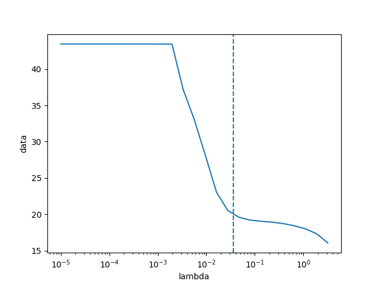

Note
Go to the end to download the full example code
1D BRD regularization¶
For 1D BRD, adapted mainly from Venkataramanan 2002 but checked against a compiled stacked regularization that uses Lawson-Hansen.
Note that one of the unit tests essentially tests that this example behaves as expected.
- 

---------- logging output to /home/jmfranck/pyspecdata.0.log ----------
[(25, 'vd'), (100, '$\\log(T_1)$')]
[(100, '$\\log(T_1)$')]
[(25, 'vd')]
*** *** ***
[(25, 'vd')]
[(100, '$\\log(T_1)$')]
*** *** ***
--> nnls.py(172):pyspecdata.matrix_math nnls 2025-07-08 15:37:33,408
INFO: argcheck done
--> nnls.py(291):pyspecdata.matrix_math nnls 2025-07-08 15:37:33,416
INFO: S1 is [4.32594139e+01 1.14067699e+01 5.27410398e+00 2.31565579e+00
6.82140197e-01 2.07917079e-01 5.68093757e-02 1.53070136e-02
3.75635882e-03 8.94520237e-04 1.95762142e-04 4.11592621e-05
7.98652315e-06 1.47596130e-06 2.51772342e-07 4.05185112e-08
5.99364462e-09 8.26213697e-10 1.03618610e-10 1.18847096e-11
1.21391608e-12 1.09570779e-13 8.58076129e-15 1.58097699e-15
7.13572588e-16] so I'm going to 6 based on default_cut of 0.001
--> nnls.py(370):pyspecdata.matrix_math nnls 2025-07-08 15:37:33,417
INFO: about to run venk(6, 100) (6,)
--> nnls.py(172):pyspecdata.matrix_math nnls 2025-07-08 15:37:33,418
INFO: argcheck done
--> nnls.py(291):pyspecdata.matrix_math nnls 2025-07-08 15:37:33,425
INFO: S1 is [4.32594139e+01 1.14067699e+01 5.27410398e+00 2.31565579e+00
6.82140197e-01 2.07917079e-01 5.68093757e-02 1.53070136e-02
3.75635882e-03 8.94520237e-04 1.95762142e-04 4.11592621e-05
7.98652315e-06 1.47596130e-06 2.51772342e-07 4.05185112e-08
5.99364462e-09 8.26213697e-10 1.03618610e-10 1.18847096e-11
1.21391608e-12 1.09570779e-13 8.58076129e-15 1.58097699e-15
7.13572588e-16] so I'm going to 6 based on default_cut of 0.001
--> nnls.py(172):pyspecdata.matrix_math nnls 2025-07-08 15:37:33,428
INFO: argcheck done
--> nnls.py(291):pyspecdata.matrix_math nnls 2025-07-08 15:37:33,435
INFO: S1 is [4.32594139e+01 1.14067699e+01 5.27410398e+00 2.31565579e+00
6.82140197e-01 2.07917079e-01 5.68093757e-02 1.53070136e-02
3.75635882e-03 8.94520237e-04 1.95762142e-04 4.11592621e-05
7.98652315e-06 1.47596130e-06 2.51772342e-07 4.05185112e-08
5.99364462e-09 8.26213697e-10 1.03618610e-10 1.18847096e-11
1.21391608e-12 1.09570779e-13 8.58076129e-15 1.58097699e-15
7.13572588e-16] so I'm going to 6 based on default_cut of 0.001
[(25, 'vd'), (100, '$\\log(T_1)$')]
true mean: 0.16499997337102065 ± 0.3576690429197919
opt. λ mean: 0.9013864830113146 ± 1.709683940073894
BRD mean: 0.9318763536449894 ± 1.5859823021148707
from matplotlib.pyplot import figure, show, title, legend, axvline, rcParams
from numpy import linspace, exp, zeros, eye, logspace, r_, sqrt, pi, std
from pylab import linalg
from pyspecdata import nddata, init_logging, plot
from scipy.optimize import nnls
from numpy.random import seed
rcParams["image.aspect"] = "auto" # needed for sphinx gallery
# sphinx_gallery_thumbnail_number = 2
seed(1234)
init_logging("debug")
vd_list = nddata(linspace(5e-4, 10, 25), "vd")
t1_name = r"$\log(T_1)$"
logT1 = nddata(r_[-4:2:100j], t1_name)
mu1 = 0.5
sigma1 = 0.3
L_curve_l = 0.036 # read manually off of plot
plot_Lcurve = True
true_F = (
1 / sqrt(2 * pi * sigma1**2) * exp(-((logT1 - mu1) ** 2) / 2 / sigma1**2)
)
K = 1.0 - 2 * exp(-vd_list / 10 ** (logT1))
K.reorder("vd") # make sure vd along rows
print(K.shape)
print(true_F.shape)
M = K @ true_F # the fake data
print(M.shape)
# M.setaxis('vd',y_axis)
M.add_noise(0.2)
M /= 0.2 # this is key -- make sure that the noise variance is 1, for BRD
# this is here to test the integrated 1D-BRD (for pyspecdata)
print("*** *** ***")
print(M.shape)
print(logT1.shape)
print("*** *** ***")
solution = M.C.nnls(
"vd", logT1, lambda x, y: 1 - 2 * exp(-x / 10 ** (y)), l="BRD"
)
solution_confirm = M.C.nnls(
"vd",
logT1,
lambda x, y: 1 - 2 * exp(-x / 10 ** (y)),
l=sqrt(solution.get_prop("opt_alpha")),
)
def nnls_reg(K, b, val):
b_prime = r_[b, zeros(K.shape[1])]
x, _ = nnls(A_prime(K, val), b_prime)
return x
# generate the A matrix, which should have form of the original kernel and then
# an additional length corresponding to size of the data dimension, where
# smothing param val is placed
def A_prime(K, val):
dimension = K.shape[1]
A_prime = r_[K, val * eye(dimension)]
return A_prime
if plot_Lcurve:
# {{{ L-curve
# solution matrix for l different lambda values
x = M.real.C.nnls(
"vd",
logT1,
lambda x, y: (1.0 - 2 * exp(-x / 10 ** (y))),
l=sqrt(
logspace(-10, 1, 25)
), # adjusting the left number will adjust the right side of L-curve
)
# norm of the residual (data - soln)
# norm of the solution (taken along the fit axis)
x.run(linalg.norm, t1_name)
# From L-curve
figure()
axvline(x=L_curve_l, ls="--")
plot(x)
# }}}
# generate data vector for smoothing
print(K.shape)
L_opt_vec = nnls_reg(K.data, M.data.squeeze(), L_curve_l)
figure()
title("ILT distributions")
L_opt_vec = nddata(L_opt_vec, t1_name).copy_axes(true_F)
normalization = solution.data.max() / true_F.data.max()
plot(true_F * normalization, label="True")
print(
"true mean:",
true_F.C.mean(t1_name).item(),
"±",
true_F.run(std, t1_name).item(),
)
plot(L_opt_vec, label="L-Curve")
print(
"opt. λ mean:",
L_opt_vec.C.mean(t1_name).item(),
"±",
L_opt_vec.run(std, t1_name).item(),
)
plot(solution, ":", label="pyspecdata-BRD")
plot(
solution_confirm,
"--",
label=rf"manual BRD $\alpha={solution.get_prop('opt_alpha'):#0.2g}$",
alpha=0.5,
)
print(
"BRD mean:",
solution.C.mean(t1_name).item(),
"±",
solution.run(std, t1_name).item(),
)
legend()
show()
Total running time of the script: (0 minutes 7.029 seconds)